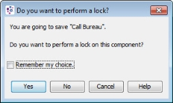

Component overview
A component is an entity within a Solution that carries out a particular business function. Examples include Decision Process Flows, Scorecards, Logical Data Source etc. Components are stored and displayed in the Explorer window.
Folders are used to provide an organisational structure for the components contained in the solution. Folders can contain many different types of component. It makes things easier if components of a similar type are grouped together, for example; segmentation devices, decision process flows, etc.
Components are created in the Explorer window. Before the user can create a specific component the allowed component types for each folder of a solution must be defined to enable the creation of components inside them.
Components are first saved in the user repository. The user needs to check them in to the shared repository to make them available for other users. By doing this, an automatic component history is generated.
Components can be flagged as protected, by an Experian user, enabling the intellectual property of the component to be hidden from view from normal users. A component that has been marked as protected will be displayed with an additional icon  when listed in the Explorer Window.
when listed in the Explorer Window.
The user can import a previously exported component, folder or solution along with any dependent components and folder structures.
The user can export a component, folder or solution along with any dependant components and folder structures.
Any components can be moved to the Recycle Bin and permanently deleted if they are not in use by other components (dependent) located in the solution.
|
When working with components in a multi-user system, refer to the Component Design and Maintenance topic in the PowerCurve SDS Best Practice Guide (contained in the Getting Started with Design Studio documentation bundle) for more information. |
Components are stored and displayed in the Explorer window.
Folders can contain many different types of component. It makes things easier if components of a similar type are grouped together within a solution; for example, segmentation devices, decision process flows, etc.
A greyed out component type in the right field corresponds to a component type already in use in this folder; this component type cannot be removed unless the component(s) are deleted first.
Manage allowed component types allows the user to determine which components should be held in which folders. The user can also define additional configuration licence constraints to a folder.
| The Manage allowed component types option is only available to users who have Architect permissions. |
To manage allowed component types
- In the Explorer window, right click on the folder and select Manage allowed component types.
- In the Manage allowed component types dialog, in the All Categories field, select the pre-defined set of components required from the drop-down list.
- Use the buttons in the middle to allow or to prevent the use of components within the folder:
> - use this to add a selected component from the left field to the allowed component types.
>> - use this to add all components from the left field to the allowed component types.
< - use this to remove a selected component from the allowed component types.
<< - use this to remove all components from the allowed component types.
Copy from parent - use this to copy all component types from the Component Type parent folder selected in the drop down.
- When you have all the required component types in the Allowed component types field, click OK to finish.
To configure licence constraints in the folder, see the Define additional configuration licence constraints section for more information.
The Manage allowed component types dialog will close, and the folder will be updated.
By default, all allowed components (as defined in the Manage allowed components dialog) will be accessible in a folder, subject to a user's role permissions and the capability licence in use. If additional configuration licence constraints are to be applied to a folder, a user can define this in the Manage allowed components types dialog.
Licence credentials are included as part of the template when folder/solution templates and component templates are created.
Licence credentials are set up for a folder the first time it is created by a template. Applying templates subsequently will not change existing credentials in a folder. So once a folder has been created, applying any number of other templates will not change the existing licence credentials.
However, if templates containing components of a new type are applied to an existing folder (either by applying a folder/solution template or a component template), then the licence credentials for the new component type will be set up for the folder.
To define additional configuration licence constraints to a folder
- In the Manage allowed component types dialog, click on the Define Licence Credentials button.
- The definition area will be displayed:
- Using the drop down list, select the licence level for which you wish to define constraints (Architect, Designer or Anyone).
- Configure as appropriate by clicking on the appropriate component type and activity; the tick will change with each click:
When the activity column for a component type displays a
 , this means that the current licence level selected (Architect, Designer, Anyone) is the minimum required to carry out this action.
, this means that the current licence level selected (Architect, Designer, Anyone) is the minimum required to carry out this action.When the activity column for a component type displays a , this means that the lower licence level (a lower level than the currently selected one) has been specified as the minimum required for this activity.
When the activity column for a component type displays a
 , this means that a higher licence has been specified as the minimum required for this activity.
, this means that a higher licence has been specified as the minimum required for this activity. - Click OK to finish.


{kind=link}
{kind=link}
{kind=link}
{kind=link}
The licence credential constraints for the folder are now configured.
The user can add a component to a folder within the Explorer window.
Folders are used to provide an organisational structure for the components contained in the solution. Folders can contain many different types of component. It makes things easier if components of a similar type are grouped together; for example, segmentation devices, decision process flows, etc.
To add a component to a folder
- In the Explorer window, right click on the folder you want to add a component to.
- Select Add component.
- In the Create component dialog, delete the default name and enter the name of the new component in the name field.
| You will only be able to add a component type that has been allowed for the selected folder. If it is not allowed it will not be listed and therefore cannot be created. Please see the managed allowed component types help page for more information on this. |
| When naming a component, it is recommended that very long names are not used (>100 chars). Long names will impact the usability of the Studio for example how the name is displayed in the Explorer and how the name is displayed in embedded component editors. |
- If you wish to have the new component display in the Main editor on creation, ensure that the Open new components in component editor tick box is selected.
- Click on the OK button.
|
The system will check to ensure that this name is unique within the solution. If the tick box is selected, the newly created component will be displayed in the Explorer window within the selected folder. If the tick box is not selected the component will be listed in the appropriate folder. |
A user can check in a component. Check in moves the component to the shared area which makes it available for other users.
| You will be unable to check in a component whilst it is open for editing the Main editor. |
To check in a component
- In the Explorer window, right click on the component you want to check in.
- Select Check-in. The Check-in wizard will be initiated.
- In the Check-in wizard, ensure that the Accept Warning check box is ticked.
- Make sure that the component you want to check in is selected.
- Type a comment into the Comment field. This field is mandatory.
- If required, click on the button to choose a label from the list of existing labels in the Label Chooser dialog or start typing the label information. If you type a name, automatic suggestions will appear, select as appropriate from the drop-down box.
- Click on the Next button.
- Click on the Finish button.
{kind=link}
The component name in the Explorer window changes from bold to normal characters.
The user can check the component back out if required.
| To carry out this procedure on multiple components within a folder, right click on the folder and select Manage components. Select Check-in. In the initiated wizard, make sure that the required components are selected. Enter the comment and the label information (the comment field is mandatory). Click on the OK button then click on the Finish button. |
The user can edit or configure components as required.
To edit a component
- In the Explorer window, right click on the component you want to edit or configure.
- Select Open.
The component you have selected will open for editing in the Main editor.
| Double clicking on a component will open the component in the Main editor. |
The name of a component can be changed by the user.
To rename a component
- In the Explorer window, right click on the component you want to rename.
- Select Rename.
- In the Rename Component dialog, enter the new name of the component.
| When naming a component, it is recommended that very long names are not used (>100 chars). Long names will impact the usability of the Studio for example how the name is displayed in the Explorer and how the name is displayed in embedded component editors. |
- Click on the OK button.
The system will check to ensure that this name is unique within the current folder. The renamed component is now displayed in the Explorer window within the selected folder.
| It is advisable to check-in this component as soon as the component has been renamed in order for the new name to become visible to other users. |
A component can be marked as a favourite in the Explorer window. Favourites can be viewed in one place by using the Explorer view bar, making them easier to locate. This means that the user can select components used on a regular basis as favourites.
Mark a component as a favourite.
- In the Explorer window, right click on the required component.
- Select Mark as favourite.
The component will now display in your favourites folder when selected from the Explorer view bar in the Explorer window.
The user can move a component to another folder within the Explorer window.
| If a component has been checked in, it cannot be moved. |
To move a component using drag and drop
- In the Explorer window, select and drag the component into the required folder.
The component will now be displayed in the appropriate folder.
Drop will not be available if the component type is not allowed in the destination folder, or if the user does not have create permission for this destination folder.
If a component with the same name already exists in the target folder, the user will be prompted with the error message; Name already exists. To rename the component, see Rename a component for more information.
To move a component using cut and paste
- In the Explorer window, right click on the component you want to move.
- Select Cut.
- Right click on the folder where you want to move the component to.
- Select Paste.
The component will now be displayed in the appropriate folder.
Paste will not be available if the component type is not allowed in the destination folder, or if the user does not have create permission for this destination folder.
If a component with the same name already exists in the target folder, the component is renamed to "Copy of", "Copy (2) of", etc. To rename the component, see Rename a component topic for more information.
The user can copy a component to another folder within the Explorer window. The selected component will still exists in the source folder.
| Component dependencies are not copied. Once the copy has been completed, if there is no broken dependency, nothing needs to be done. If the component has some broken dependencies, this will be detailed in the output window. |
To copy a component using copy and paste
- In the Explorer window, right click on the component you want to copy.
- Select Copy.
- Right click on the folder where you wish to copy the component to.
- Select Paste.
A copy of the component will be displayed in the folder. You can rename the component if required.
Paste will not be available if the component type is not allowed in the destination folder, or if the user does not have create permission for this destination folder.
If a component with the same name already exists in the target folder, the component is renamed to "Copy of", "Copy (2) of", etc. See Rename a component for more information.
To copy a component using drag and drop
| To copy a component using the drag and drop function alone, the component must be checked in. If the component is not checked in, the drag and drop function will move the selected component into a new folder, removing it from the source folder. You may copy using drag and drop along with the Ctrl button. |
- In the Explorer window, select and drag the component into the required folder.
A copy of the component will now be displayed in the appropriate folder. You can rename the component if required.
Drop will not be available if the component type is not allowed in the destination folder, or if the user does not have create permission for this destination folder.
If a component with the same name already exists in the target folder, the component is renamed to "Copy of", "Copy (2) of", etc. See Rename a component for more information.
The user can save any component that is open for editing in the main editor
To save a component
- To save a component, either click on File in the Main Menu Bar and select Save or click on the
 in the Main Toolbar.
in the Main Toolbar.
The system will display the following dialog:
- Click on the Yes button to save and lock the component, click on the No button to save the component without locking it.
Refer to the Do you want to perform a lock dialog? topic for more information.
{kind=link}
The dialog will close and the component will be saved.
The user can save and copy a component to a folder within the Explorer window.
To save and copy a component
- To save and copy a component, the component must be open for editing in the Main editor.
- Click on File in the Main menu bar and select Save & Copy As.
- The Copy Component dialog will be initiated. Type the new name for the component copy in the name field.
- Click on the OK button.
The copy component will be saved and a copy of it will now be displayed in the same folder as the original component.
The Lock wizard allows the user to lock a component or template. Locking a component or template prevents other users from saving any changes made to it back to the repository.
| Only users with the appropriate update permissions can lock a component or template within the shared domain. | |
|
Other users can copy a locked component or template to their workspace but they will not be able to lock it or update any changes made to it back to the repository. |
To lock a component or template
- In the Explorer window, right click on the component you want to lock in the Solution Repository, or template in the Content Repository, and then select Lock... The Lock wizard is displayed.
- Make sure the component or template you want to lock is selected.
- Click Next.
- Click Finish.
The locked component or template is marked with the Lock status  icon in the Inventory window.
icon in the Inventory window.
A component or template can be unlocked to allow other users to save changes made to it back to the repository. A component or template can be unlocked by the user who locked it, or by a user with the solution administrator role.
|
To lock multiple components or templates within the same folder, right click on the folder and select Manage components. Select Lock... In the Lock wizard, ensure the required components or templates are selected. Click OK and then click Finish. |
The Unlock wizard allows the user to unlock a component or template. Unlocking a component or template will allow other users to save changes made to it back to the repository.
|
A component or template can only be unlocked by the user who locked it or by a user with the solution administrator role. |
To unlock a component or template
- In the Explorer window, right click on the component from the Solution Repository, or template from the Content Repository from which you want to unlock and then select Unlock... The Unlock wizard is displayed.
- Make sure the component or template that you want to unlock is selected.
- Click Next.
- Click Finish.
In the Inventory window the Lock status icon has been removed from the component or template.
|
To unlock multiple components or templates within the same folder; right click on the folder and select Manage components. Select Unlock... In the Unlock wizard, ensure the required components or templates are selected. Click OK and then click Finish. |
Components can be tested to assess their effectiveness prior to operational implementation.
See Interactive Tester and Batch Tester for more information.
Components are stored and displayed in the Explorer window. The user can view the properties for a component.
To view component properties
- In the Explorer window, right-click on the component you want to view the properties for.
- Select Properties.
The Properties window will be initiated.
Component history is used to trace the previous versions of a component. Every time a component is checked in, a new version of it is created.
To display component history
- In the Explorer window, right click on the component for which you want to view the history.
- Select History.
The History window is displayed.
Component history is used to trace the previous versions of a component. Every time a component is checked in, a new version of it is created. The user has the ability to revert to the last revision from the Shared Area.
To revert a component to latest revision from shared area
- In the Explorer window, right click on the component you wish to revert.
- Select Revert.
- The Revert wizard will be initiated.
- Ensure that the version you want to revert to is listed and selected.
- Click on the Next button.
- Click on the Finish button.
The component versions in both the shared and user area can be seen in the Component Revisions section in the Properties window.
Component history is used to trace the previous versions of a component. Every time a component is checked in, a new version of it is created. Every time a component is checked in, a version is saved in the history of that component; meaning that any pre-existing versions are already there in the shared domain and when you check in an updated component from the user domain a new version / revision is added. Each saved version is given a revision number and can be viewed in the History window.
The user has the ability to revert back to an earlier version if required. Carrying out this process will replace the user area version with a copy of the specific revision from the shared area.
To revert a component to a previous version
- In the Explorer window, right click on the component you want to revert.
- Select History.
- The History window will be initiated.
- Right click anywhere in the Revision row that you wish to revert to.
- Select Revert to this revision.
- The Revert to this revision wizard will be initiated.
- Ensure that the version you would like to revert to is selected.
- Click on the Next button.
- Click on the Finish button.
The component versions in both the shared and user area can be seen in the Component Revisions section in the Properties window.
Folders are used to provide an organisational structure for the components contained within a solution. Folders are stored in the shared area and displayed in the Explorer window.
{kind=link}
Orphaned components are components that no longer have a parent folder; components whose parent folder has been deleted in a multi user environment. These components are held in the Orphaned Components folder in the Explorer window.
The Orphaned Components folder will only be displayed when active.
{kind=link}
Components from the Orphaned Components folder can be relocated into other folders or deleted if required.
| In a multi user environment, 2 users are working in the same folder. Both are creating components within the same folder without checking them in. If one of the users deletes the folder, the components no longer have a parent folder and are moved into the Orphaned Components folder. |
Orphaned components are components that no longer have a parent folder; components whose parent folder has been deleted in a multi user environment. These components are held in the Orphaned Components folder in the Explorer window.
The Orphaned Components folder will only be displayed when active.
Components from the Orphaned Components folder can be relocated into other folders.
To relocate an orphaned component
- In the Explorer window, select and drag the orphaned component into the required folder.
The component will now be displayed in the appropriate folder.
This option will not be available if the component type is not allowed in the destination folder, or if the user does not have create permission for this destination folder.
| If a component with the same name already exists in the target folder, the component is renamed to "Copy of", "Copy (2) of", etc. See the Rename a component topic for more information. | |
|
Component dependencies are not moved. If there is no broken dependency, nothing needs to be done. If the component has some broken dependencies, this will be detailed in the output log. |